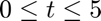
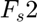
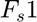
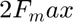

Contents
EE 274 Digital Signal Processing 1 Lab Activity 1
Name: Paul Vincent S. Nonat
D. Aliasing
The following exercise investigates the effect of improper sampling.
- Generate two 1 kHz sine signals (2 seconds duration), first signal at 8 kHz sample frequency and second signal at 1.2 kHz sample frequency
- On the same graph, use the plot function to display the two signals versus t in the range  msec.
- Listen to the two signals one after another using the function soundsc (x, fs);
- Compare the two signals. How does the sampling rate affect the digitized sound?
T = 2; %parameters f0 = 1000; % 1kHz sine signal fs1 = 8000; % Sampling frequencies fs2 = 1200; [x1, t1] = sin_NU(fs1,f0,T); % sine signal sampled at fs1 [x2, t2] = sin_NU(fs2,f0,T); % sine signal sampled at fs2 figure; plot(t1,x1,t2,x2,'LineWidth',3.0), axis([0, 0.005, -1.1, 1.1]) legend('fs_1=8 kHz','fs_2=1.2 kHz') xlabel('Time') ylabel('Signals') title('Audio aliasing');
soundsc(x1,fs1)
soundsc(x2,fs2)
function [x, t] = sin_NU(fs, f0, T) %function to generate sine signal t = 0:1/fs:T; %the signal vector output x = sin(2*pi*f0*t); %the time vector output end
based from observation, the sine wave with sampled at  does not completely recovered the original sine wave at $f_o =1$kHz as compared to  with frequency lower than , which leads to aliasing.